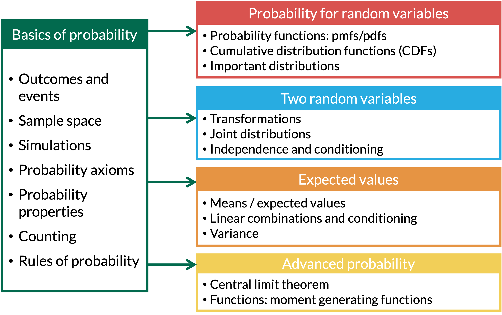
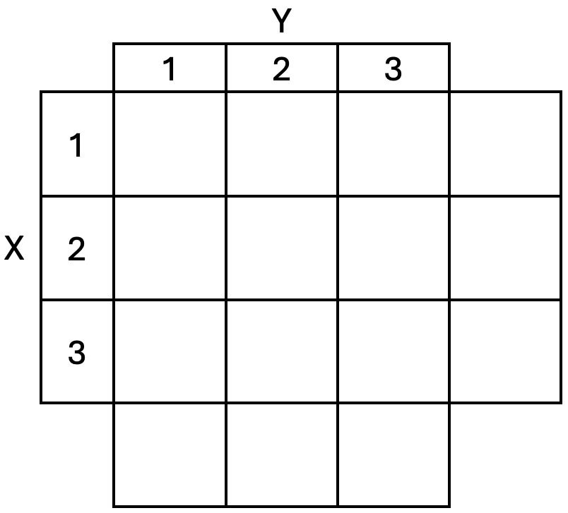
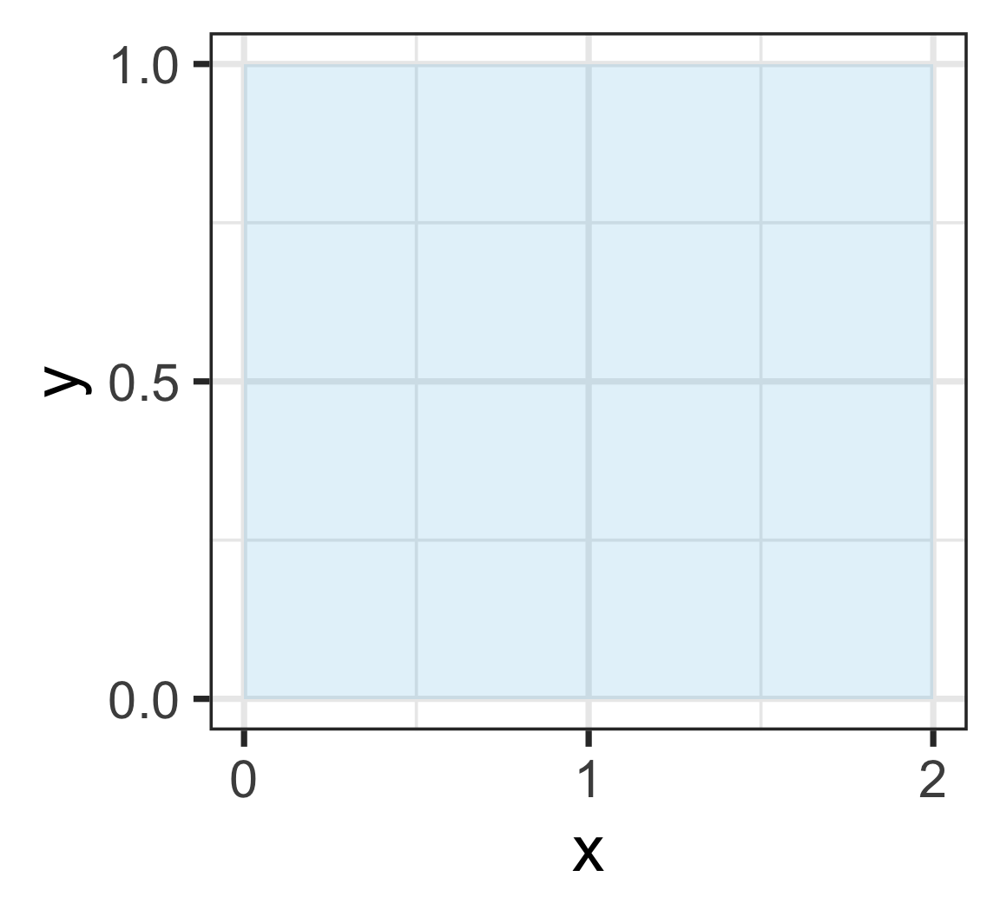
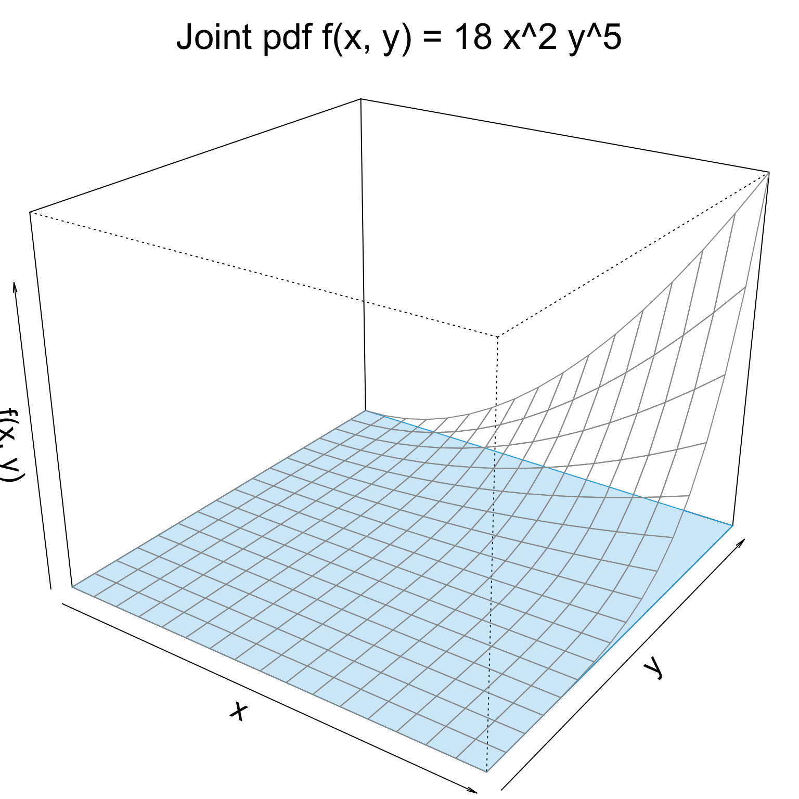
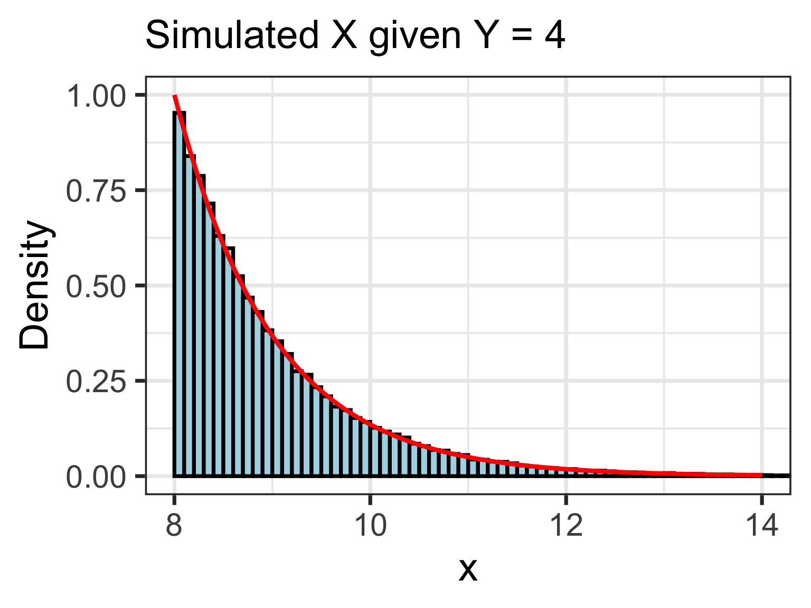

Same simulation as Lesson 15
- 1
- Same seed and number of simulations as Lesson 15.
- 2
-
Same code as Lesson 15: draw two balls without replacement, 100,000 times.
xis the first ball andyis the second.
2026-11-23
Identify the formulas for joint distributions of independent RVs and for conditional distributions (pmf’s and pdf’s)
Find and simulate the conditional pmf from a joint pmf, and check if two discrete RVs are independent
Construct a joint pdf for two independent continuous RVs from their marginal pdfs, and check it with simulation
Calculate and simulate conditional probabilities and distributions for continuous RVs

Find and simulate the conditional pmf from a joint pmf, and check if two discrete RVs are independent
Construct a joint pdf for two independent continuous RVs from their marginal pdfs, and check it with simulation
Calculate and simulate conditional probabilities and distributions for continuous RVs
For events, the conditional probability is:
\[P(A | B) = \dfrac{P(A \cap B)}{P(B)}\]
For discrete RVs:
\[p_{X|Y}(x|y) = P(X=x|Y=y) = \dfrac{p_{X,Y}(x,y)}{p_Y(y)}\] \[p_{Y|X}(y|x) = P(Y=y|X=x) = \dfrac{p_{X,Y}(x,y)}{p_X(x)}\]
if denominator is greater than 0
For continuous RVs:
\[f_{X|Y}(x|y) = \dfrac{f_{X,Y}(x,y)}{f_Y(y)}\] \[f_{Y|X}(y|x) = \dfrac{f_{X,Y}(x,y)}{f_X(x)}\]
if denominator is greater than 0
filter() (Lesson 2)If \(A \perp B\), then
\[P(A \cap B) = P(A)P(B)\]
and
\[P(A|B) = P(A)\]
For discrete RVs: If \(X \perp Y\)
\[p_{X,Y}(x,y) = p_{X}(x)p_{Y}(y)\] \[F_{X,Y}(x,y) = F_{X}(x)F_{Y}(y)\] \[p_{X|Y}(x|y) = p_{X}(x)\] \[p_{Y|X}(y|x) = p_{Y}(y)\]
For continuous RVs: If \(X \perp Y\)
\[f_{X,Y}(x,y) = f_{X}(x)f_{Y}(y)\] \[F_{X,Y}(x,y) = F_{X}(x)F_{Y}(y)\] \[f_{X|Y}(x|y) = f_{X}(x)\] \[f_{Y|X}(y|x) = f_{Y}(y)\]
For discrete RVs
For a valid joint pmf, we need:
For a valid conditional pmf, we need:
For continuous RVs
For a valid joint pdf, we need:
For a valid conditional pdf, we need:
\[p_{X_1, X_2, …, X_n}(x_1, x_2, …, x_n) = P(X_1=x_1, X_2=x_2, …, X_n=x_n)=\prod\limits_{i=1}^np_{X_i}(x_i)\] \[f_{X_1, X_2, …, X_n}(x_1, x_2, …, x_n) = \prod\limits_{i=1}^nf_{X_i}(x_i)\] \[F_{X_1, X_2, …, X_n}(x_1, x_2, …, x_n) = P(X_1\leq x_1, X_2\leq x_2, …, X_n\leq x_n)=\prod\limits_{i=1}^nP(X_i \leq x_i) = \prod\limits_{i=1}^nF_{X_i}(x_i)\]
Construct a joint pdf for two independent continuous RVs from their marginal pdfs, and check it with simulation
Calculate and simulate conditional probabilities and distributions for continuous RVs
Example 1 (from Lesson 15)
Let \(X\) and \(Y\) be two random draws from a box containing balls labelled 1, 2, and 3 without replacement.

x is the first ball and y is the second.
From the simulation, we can calculate an example, \(p_{X|Y}(x|y=1)\):
# A tibble: 1 × 3
p_x1 p_x2 p_x3
<dbl> <dbl> <dbl>
1 0 0.498 0.502y.
# A tibble: 3 × 4
y p_x1 p_x2 p_x3
<int> <dbl> <dbl> <dbl>
1 1 0 0.498 0.502
2 2 0.501 0 0.499
3 3 0.500 0.500 0 For reference, the exact answer is \(p_{X|Y}(x|y) = \frac12\) for \(x \neq y\), and \(p_{X|Y}(x|y) = 0\) for \(x = y\)
Example 1 (from Lesson 15)
Let \(X\) and \(Y\) be two random draws from a box containing balls labelled 1, 2, and 3 without replacement.
Remark:
# A tibble: 1 × 2
joint product
<dbl> <dbl>
1 0 0.111For reference, the exact answers are \(p_{X,Y}(1,1) = 0\) and \(p_X(1)\,p_Y(1) = \frac13 \cdot \frac13 = \frac19 \approx 0.111\)
Identify the formulas for joint distributions of independent RVs and for conditional distributions (pmf’s and pdf’s)
Find and simulate the conditional pmf from a joint pmf, and check if two discrete RVs are independent
Example 2: Independent \(X\) and \(Y\)
Let \(X\) and \(Y\) be independent r.v.’s with \(f_X(x)= \frac12\), for \(0 \leq x \leq 2\) and \(f_Y(y)= 3y^2\), for \(0 \leq y \leq 1\).
Example 2: Independent \(X\) and \(Y\)
Let \(X\) and \(Y\) be independent r.v.’s with \(f_X(x)= \frac12\), for \(0 \leq x \leq 2\) and \(f_Y(y)= 3y^2\), for \(0 \leq y \leq 1\).

runif() simulates it (Lesson 13).
x and y columns are drawn separately: knowing x tells us nothing about y. That is what independence means!
# A tibble: 1 × 2
joint product
<dbl> <dbl>
1 0.0635 0.0624
For reference, the exact answers is
\(\mathbb{P}(0 \leq X \leq 1, 0 \leq Y \leq \frac12) = \frac12 \cdot \frac18 = \frac{1}{16} = 0.0625\)
Example 3: Joint pdf on a square
Let \(f_{X,Y}(x,y)= 18 x^2 y^5\), for \(0 \leq x \leq 1, \ 0 \leq y \leq 1\).

reps tickets, weighted by height. Each row drawn is one simulated pair \((x, y)\).
# A tibble: 1 × 2
joint product
<dbl> <dbl>
1 0.132 0.134joint and product are close, which agrees with independenceFor reference, the exact answers is
\(\mathbb{P}(X \leq 0.8, Y \leq 0.8) = 0.8^3 \cdot 0.8^6 \approx 0.1342\)
If \(f_{X,Y}(x,y)= g(x)h(y)\), where \(g(x)\) and \(h(y)\) are pdf’s, then \(X\) and \(Y\) are independent.
If \(F_{X,Y}(x,y)= G(x)H(y)\), where \(G(x)\) and \(H(y)\) are cdf’s, then \(X\) and \(Y\) are independent.
Identify the formulas for joint distributions of independent RVs and for conditional distributions (pmf’s and pdf’s)
Find and simulate the conditional pmf from a joint pmf, and check if two discrete RVs are independent
Construct a joint pdf for two independent continuous RVs from their marginal pdfs, and check it with simulation
Example 5: Conditional pdf from a joint pdf
Let \(f_{X,Y}(x,y)= 5 e^{-x-3y}\), for \(0 < y < \frac{x}{2}\).
The wrong way to frame this:
The right way to frame this:
Example 5: Conditional pdf from a joint pdf
Let \(f_{X,Y}(x,y)= 5 e^{-x-3y}\), for \(0 < y < \frac{x}{2}\).
prob to add to 1, so the heights only need to be proportional to \(f_{X|Y}(x|4)\).
# A tibble: 1 × 1
prob
<dbl>
1 0.864filter(y == 4)? \(Y\) is continuous, so \(\mathbb{P}(Y = 4) = 0\): no simulated pair lands exactly on \(y = 4\)ggplot(ex5_sims, aes(x = x)) +
geom_histogram(aes(y = after_stat(density)),
binwidth = 0.1, boundary = 8,
color = "black", fill = "lightblue") +
geom_function(fun = function(x) exp(-(x - 8)),
xlim = c(8, 14),
color = "red", linewidth = 1.5) +
coord_cartesian(xlim = c(8, 14)) +
labs(subtitle = "Simulated X given Y = 4",
x = "x", y = "Density")
For reference, the exact answer is \(\mathbb{P}(2<X<10|Y=4) = \mathbb{P}(8<X<10|Y=4) = 1 - e^{-2} \approx 0.8647\)
| Discrete \(X\) and \(Y\) | Continuous \(X\) and \(Y\) | |
|---|---|---|
| Conditional distribution | \(p_{X \mid Y}(x \mid y) = \dfrac{p_{X,Y}(x,y)}{p_Y(y)}\) | \(f_{X \mid Y}(x \mid y) = \dfrac{f_{X,Y}(x,y)}{f_Y(y)}\): a slice of the joint pdf, rescaled to area 1 |
| Independent if | \(p_{X,Y}(x,y) = p_X(x)\,p_Y(y)\) for every pair | \(f_{X,Y}(x,y) = f_X(x)\,f_Y(y)\), and the possible values are a rectangle |
| Simulate a conditional distribution | filter(y == 1): keep the simulations where \(Y = 1\) |
Grid sampling along the slice: prob is \(f_{X,Y}(x, y)\) at that \(y\) |
| Simulate independent \(X\) and \(Y\) | Draw x and y separately |
Draw x and y separately |
| Check independence | joint vs. product of the marginal probabilities |
joint vs. product of the marginal probabilities |
Lesson 16 Slides